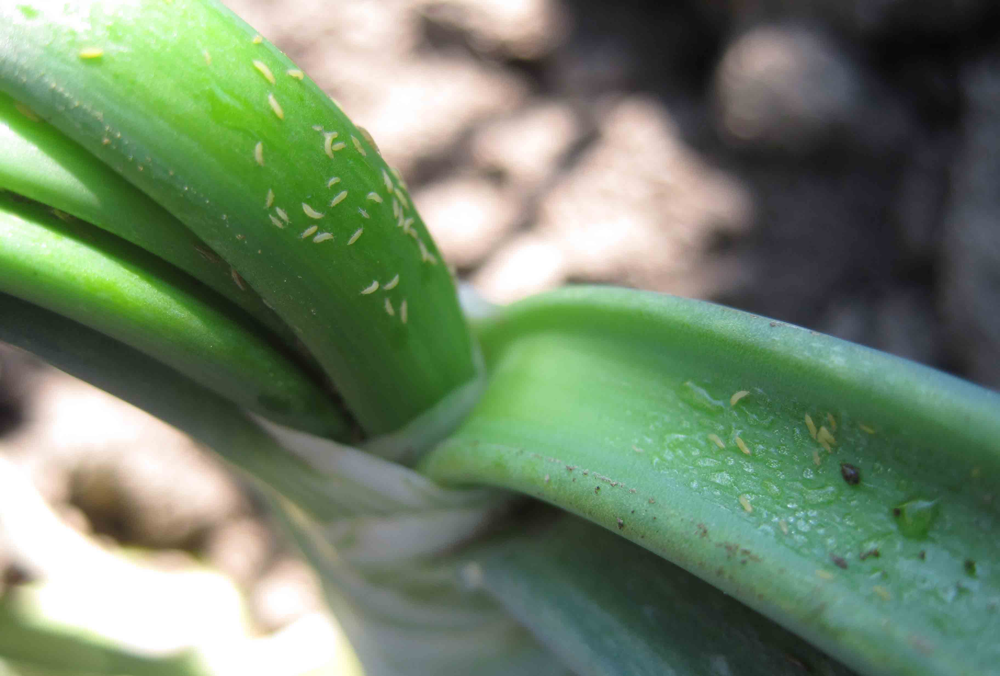
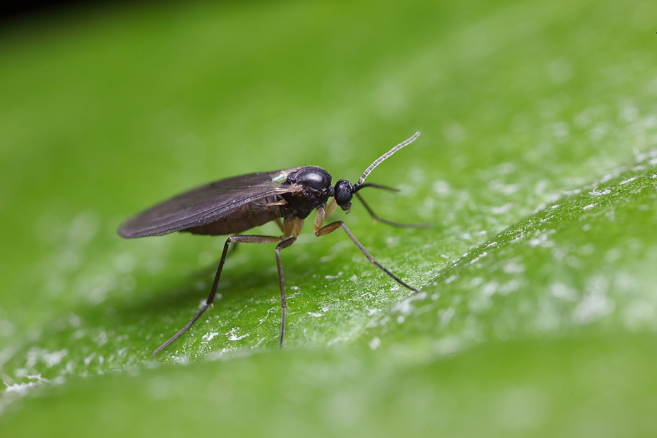
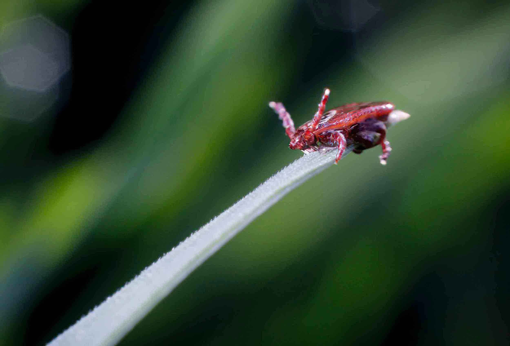
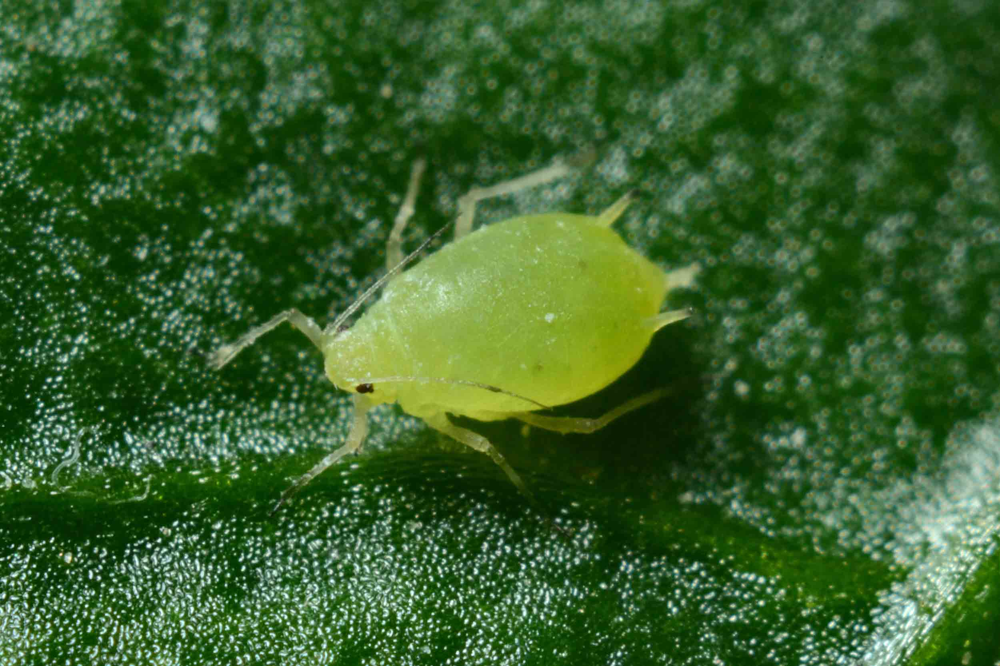
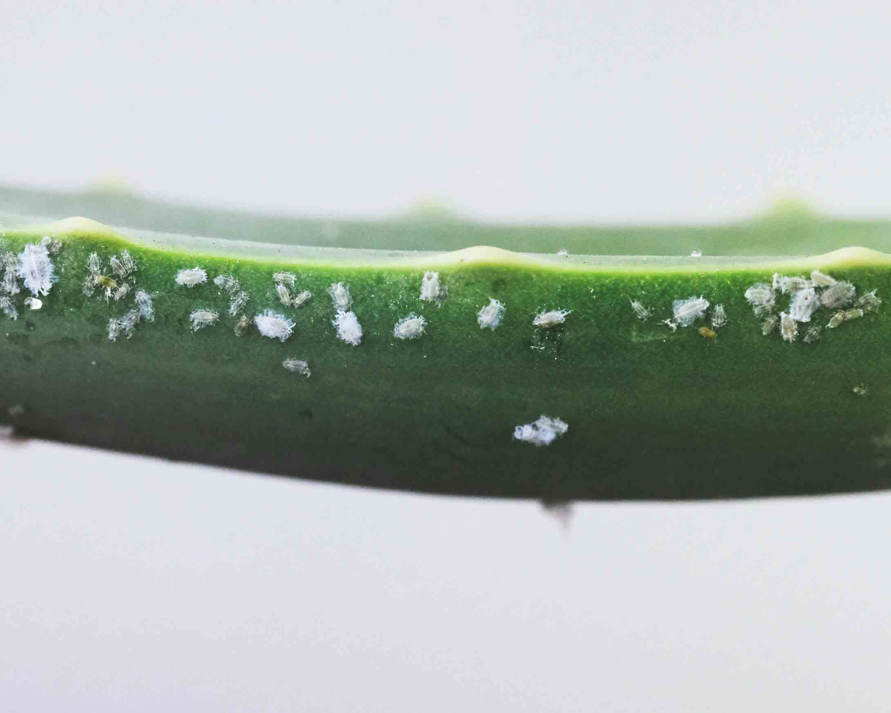
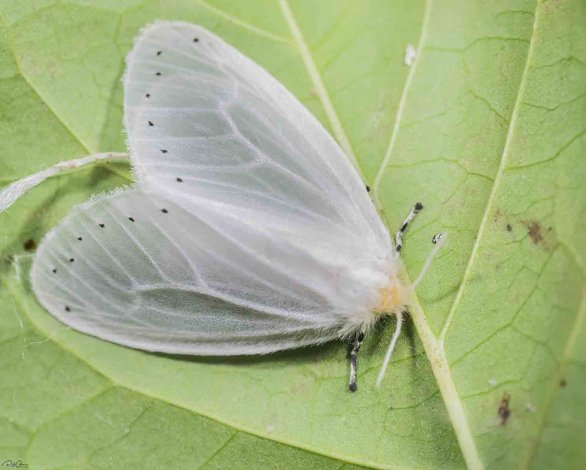
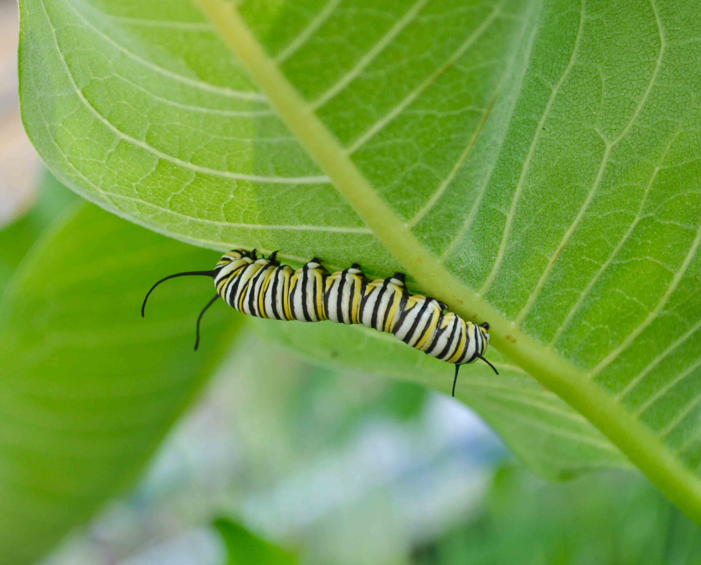
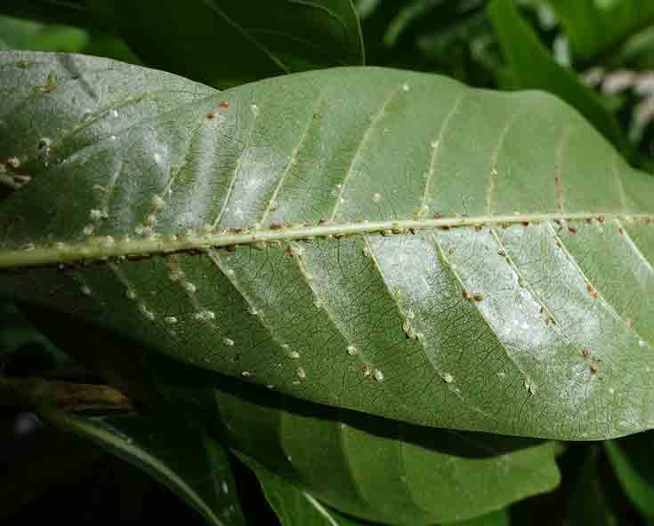

How to spot pest damage on your plants
Spotting pest damage on your plants can be tricky. Sometimes by the time you notice the extent of the damage, its too late to save your plant. We are going to share some tips and signs to catch the pests early. The best way to keep pests off your plant is prevention so when you get a new plant, clean them and quarantine them for two weeks before you put them with your other plants. Another way to catch pests early is to check your plants atleast once a month and clean the leaves off with an insecticide or a diluted neem oil mixture. Poke in the soil to prevent soil from compacting and water your plant with 1 part hydrogen peroxide and 3 parts water, this will help to kill pest eggs in the soil, and direct oxygen to the roots of your plant. Even if you don't have pests on your plants, this routine will help keep your plants healthy and their leaves shiny!
-
Thrips
What is a thrip?
As adults thrips can fly or jump between leaves; they lay tiny black, sticky eggs on the underside of leaves. Infant thrips look like little white riceshaped bugs. They go after new growth and damage causes large brown patches and dots that damage leaves.
How to treat thrips
Thrips are treated by a spray of insecticide at first discovery and repeat as necessary. It is advised to isolate the plant as to not spread the thrips to other houseplants.
-
Fungus Gnats
What is a fungus gnat?
Fungus gnats are small black flying insects that resemble fruit flies when adults, and are only harmful as maggots. Fungus gnat maggots generally feed on the roots of the plant and tend to thrive in over-watered plants (consistently wet soil).
How to treat fungus gnats
Fungus gnats are treated by water mixed with hydrogen peroxide and sticky traps. In extreme cases it is recommended to completely change out the soil of the plant and thoroughly clean plant roots.
-
Spidermites
What is a spidermite?
Can be identified by webbing under the leaves as well as speckled yellow blotches on the plant. They tend to thrive in hot and dry conditions. Look out for little white spiders on the webbing, you may be able to see them moving around.
How to treat spidermites
Spidermites can be treated by spraying the plant with insecticide and isolating the plant to prevent further spread of the pest to other plants. If damage is severe, dispose of plant to prevent spread.
-
Aphids
What is an aphid?
Aphids can come in multiple colours ranging from green, to black, and to orange. They are generally preyed upon by ladybugs. Flowering plants are especially vulnerable to aphids but they will take bitesout of any portion of the plant.
How to treat aphids
To treat aphids, spray them with insecticide and repeat when its necessary. If you want to avoid insecticide, a biological insecticide like ladybugs may be the best option for your plant.
-
Mealy bugs
What are mealybugs?
Identified by small or large clusters of white fluff under the leaves and on the stems. Check in the folds of stems and new leaves as they hide both there and on the underside of leaves. They can cause the plant to wilt and yellow if left untreated.
How to treat mealybugs
Wipe off with a damp cloth and spray with insecticide to deal with the infestation. Alternatively, you can dip q-tips in rubbing alcohol to get into the bugs hiding places, they will turn grey on contact.
-
Whitefly
What is a whitefly?
Whiteflies appear similar to moths but are somewhat smaller, and the green looking larvae stick to the underside of leaves. They can cause yellowing, brown dots, and the eventual death of the leaves on your plant.
How to treat whiteflies
Spray your plant 3 times daily with insecticide, and isolate the plant to limit infection to only one plant. If you notice the damage is too severe, consider disposing of your plant.
-
Caterpillars
What is a caterpillar?
Caterpillars are butterfly or moth larvae that come in various species and sizes. Caterpillars leave large holes in the leaves of your plant. These insects will usually use your plant as its meal if the plant is left outside over time.
How to treat caterpillars
Caterpillars are generally large enough to be picked off by hand and relocated especially if it is an endangered species. It is usually not necessary to use insecticide for removal.
-
Scale
What is scale?
Scale can be identified as small brown oval-shaped spots under leaves mainly along the veins of the leaf. These bugs have hard protective shells. They can make the leaves turn yellow and sticky if they are left untreated.
How to treat scale
Wipe off with a damp cloth as the outer shell protects the scale from insecticide. After removal spray the plant with insecticide. You can also dip q-tips in rubbing alcohol to remove difficult bugs.